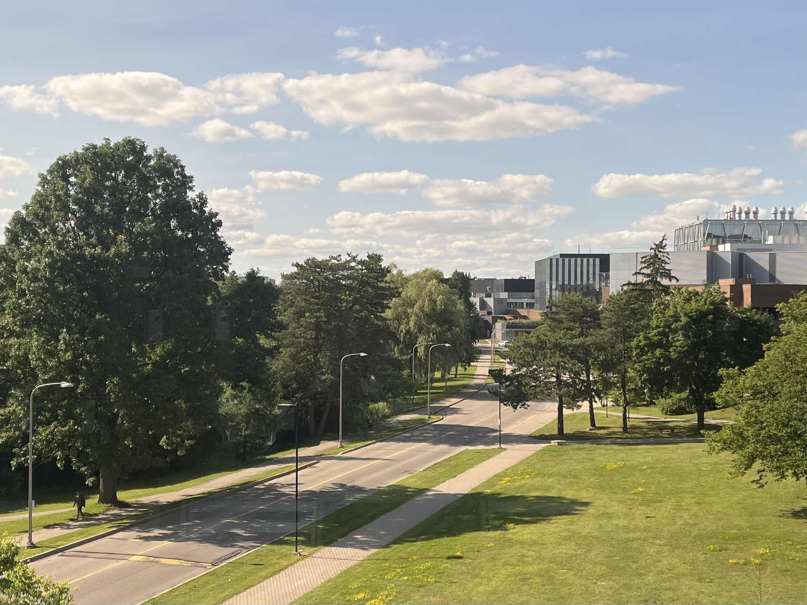
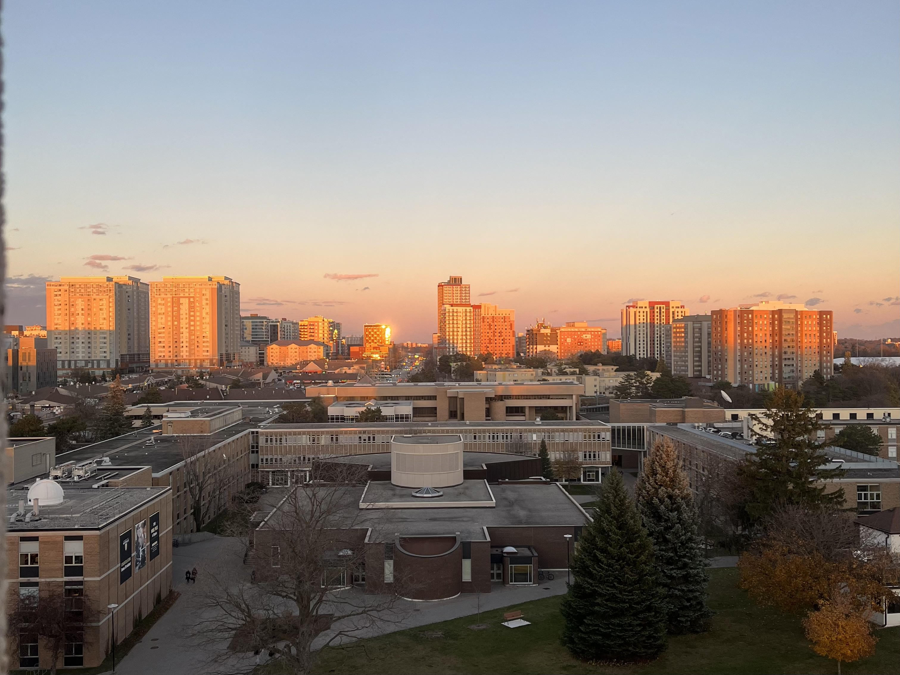
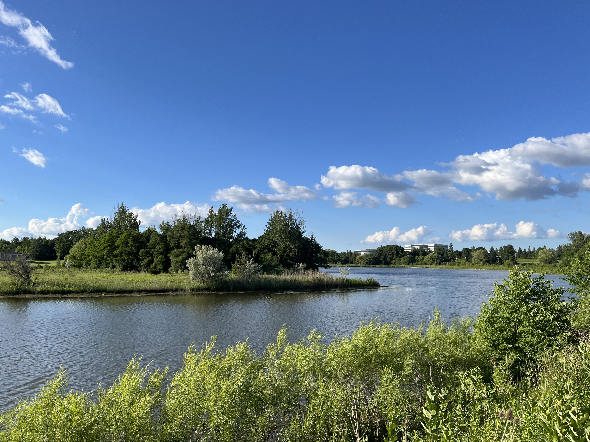
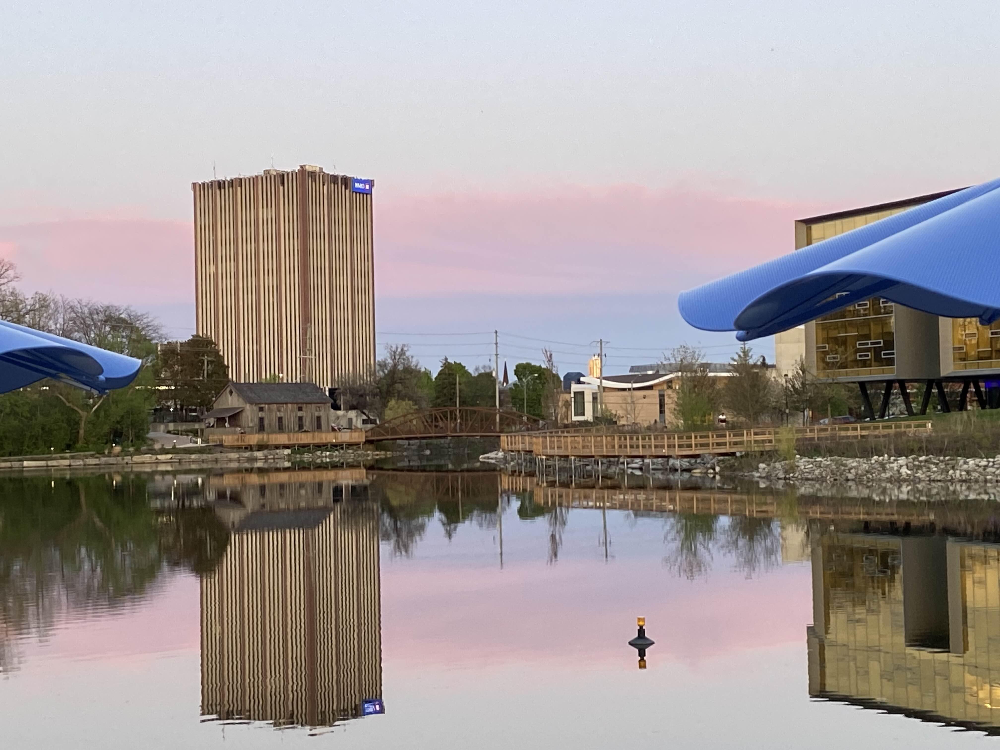

The old man remembers the rhythm of life before the strangers came. In the warm season, his people would move inland to gather acorns from the oak groves, returning to the bay when the salmon ran. He knew every bird call, every animal trail, every sacred site across their territory. Their village of two hundred was part of a complex network of trade and marriage alliances with neighboring tribes. The bears and elk were plentiful, the waters teemed with fish, and the geese darkened the sky during their migrations.
Then the Spanish arrived with their crosses and their strange god. Their promises of salvation and civilization. At first, they were welcomed. The missionaries brought new tools, new crops, and new ways of building. Some embraced these changes openly, seeing the potential for a different kind of life. Even those who resisted couldn't deny that the missionaries represented a kind of power their people had never known.
The strangers spoke of their god through gestures at first, while their interpreters learned the local dialects. They built a great house of worship overlooking the bay, its cross casting long shadows over the village at sunset. The old man watched as they blessed the land with new names, christening their settlement after their patron saint. San Francisco, they called it, as if the sound itself could transform the land into something new.
And who could argue? Their weapons were stronger and their numbers ever growing. So even though European diseases swept through the old man’s village, leaving elders who carried their people's stories and wisdom dying gasping for breath, even though ceremonial gatherings were banned and replaced with mandatory evening prayers, even though their carefully managed landscape was transformed into rigid agricultural plots, even though their children would spend their days the confines of the churches instead of running free across the boundless land, this is progress.
And progress marches forward, leaving old traditions to fade like morning mist over the bay.
The prospector's hands bleed as he pans another load of gravel from the American River. Eight months ago, he was a carpenter in Boston, reading the newspaper accounts of gold discovered at Sutter's Mill, 100 miles northeast of San Francisco. With the promise of riches in his heart, he sold everything he owned to make the journey west. The overland route nearly killed him—cholera, hostile tribes, blazing desert, steep mountains. But here he is in the spring of 1849, one of the thousands they're calling "forty-niners," chasing the California dream.
It wasn’t long before the easy gold was gone. Where individual prospectors once panned the streams, now great hydraulic cannons blast entire hillsides apart, polluting the pristine valleys just to turn a profit. The prospector works for a mining company now, one of dozens of men directing the powerful jets of water. His own dreams of striking it rich have washed away with the gravel, while the shareholders in San Francisco grow fat on the proceeds of their labor.
But look how the city grows! Where there was once a sleepy settlement of 200, now 36,000 people crowd the muddy streets. Where there was once wilderness, now there are roads, railways, and telegraph lines. Banks tower over Main Street, their granite facades projecting modernity to passersby. Ships crowd the harbour, bringing goods from around the world and spreading California’s wealth back across the sea. The city pulses with an energy, quickening the ambition of merchants, blacksmiths, and tailors to own, and make, and trade, and profit, and be a part of something greater than themselves.
So even though the rivers run brown with mining waste, even though the elk and deer have fled from the constant thunder of hydraulic canons, even though the new state government speaks of “extermination” of the natives, even though the wealth gap grows wider every day, even though the gold rush's promise of riches proved hollow for most who chased it, this is progress.
And progress marches forward, leaving broken dreams to settle like silt at the bottom of the river.
The dockworker's muscles ache as he unloads another cargo ship. Through the morning fog, he can see the towers of the Golden Gate Bridge, nearly complete after four years of construction. The bridge stands as a testament to human ingenuity and determination, but down by the harbourside, progress feels different. Last year, when the dust storms ravaged his family farm in Oklahoma, destroying their harvest for the second year in a row, the promise of work on San Francisco’s booming waterfront drew him west. Now in 1937, he stands among the 300 longshoremen of Pier 5, their faces weathered by salt spray and their spirits hardened by brutal working conditions. Each morning they gather at the shape-up, where foremen hand-pick workers for the day's labour, turning men into disposable parts for the great industrial machine of the West coast.
Then one December morning came the news of Pearl Harbor. Bay area shipyards mobilized into vast industrial complexes, putting tens of thousands to work. Brand new warships sailed through the Golden Gate, one every few days. The dockworker’s income doubles, then triples. He moves from a cramped apartment in the Mission to a proper house in the Sunset District. San Francisco’s population swells to 700,000 people. Cable cars shuttle workers across town and the streets hum with the ceaseless rhythm of wartime production.
But the prosperity doesn't last. By the 1950s, a new revolution sweeps the waterfront - containerization. Massive steel boxes eliminate the need for teams of men to load and unload freight. Mechanical cranes replace muscle, standardized containers replace the careful art of hand-stowing different types of cargo. The workforce shrinks year by year. Many of his friends are forced to find work inland, their maritime skills suddenly obsolete. The unions fight back, but they cannot stop the tide of automation. After all, how could anyone argue against increased efficiency and lower costs?
So even though the air now carries industrial smog that burns the lungs, even though the bay’s water grows murky with factory waste and shipyard refuse, even though the labourers who helped Uncle Sam plant the stars and stripes in Tokyo and Berlin are displaced by machines without second thought, even though the streets that once promised opportunity now shelter a growing number of homeless, this is progress.
And progress marches forward, leaving aching bodies to rust like abandoned machines in the shipyard.
The software engineer refreshes his LinkedIn feed between meetings in his Palo Alto office. Just a year earlier, he was cramming for finals at the University of Waterloo, dreaming of Silicon Valley between co-op terms. His profile tells the story: CS ‘24, internships at Google and Meta, and now an ML engineer at an AI startup. A path no doubt familiar to thousands of ambitious graduates, each betting on the promise of Silicon Valley.
The algorithms he writes dance across data centers, processing more information in a millisecond than a human could in their lifetime. Where programmers were once a rare breed of people who spoke in assembly and wrote their own operating systems, now they are as common as the baristas who make the $9 lattes they sip on as large language models generate blocks of code for them.
His days blur together in an endless cycle of standup meetings and pull requests. The food he DoorDashes is filled with sugar, sodium, and trans fats, but stripped of nutrition. His friends brag about promotions and RSU refreshers in group chats while his equity is still paper money. In the morning, he checks Instagram to see all his former classmates living more interesting lives. In the evening, he orders takeout and falls asleep to Netflix, too mentally drained to cook, read, or exercise. Until now, everything was going exactly as planned, and yet he finds himself unsatisfied. Beneath the carefully curated career trajectory lies a creeping emptiness that no amount of Leetcode problems could have prepared him for.
But let’s not forget how today’s technology makes miracles seem mundane. Thanks to people like him, grandmothers can see their grandkids grow up from halfway across the world, teenagers from rural villages can access humanity’s collective knowledge, and anyone with an idea in the morning can spark a revolution before sunset. So even though authentic human connection has been replaced by likes and follows, even though we traded our attention spans for dopamine-maxing scrolling sessions, even though venture capitalists talk about democratizing technology while stepping past the growing tent cities on their way to board meetings, even though each year doctors prescribe more antidepressants than the last, this is progress.
And progress marches forward, leaving minds and souls to wander like a programmer through a legacy code base.
And now, the photo gallery. Enjoy some pictures of campus during the summertime. I for one can’t wait for winter to be over.




News: The US and Russia begin peace talks in Saudi Arabia without Ukraine, Dallas Mavericks trade Luka Dončić away, Elon launches a takeover bid of OpenAI for $97.4 billion.
Reading: A People's History of the United States, Howard Zinn